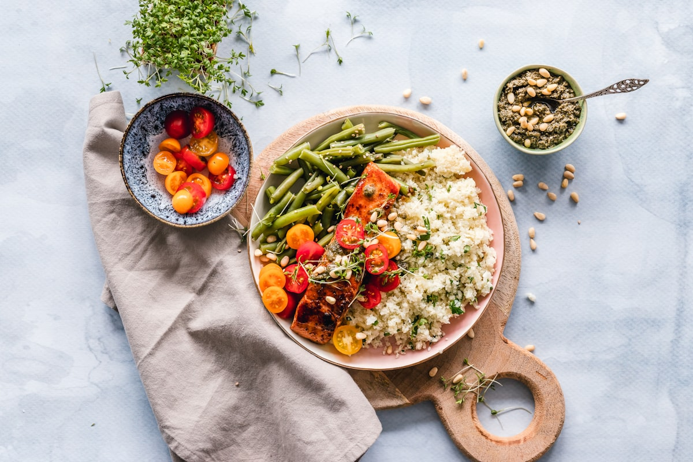

왜 많은 직장인들이 점심 식사에 만족하지 못할까요?
바쁜 아침 출근길, 점심까지 미리 준비하는 것은 쉽지 않습니다. 결국 가까운 편의점이나 배달 음식으로 식사를 해결하는 경우가 많습니다. 처음에는 편리하지만 매일 반복되면 메뉴가 비슷해지고, 영양 균형도 신경 쓰기 어려워집니다.
특히 직장인들은 업무에 집중해야 하는 시간에 점심 메뉴를 고민하거나 주문을 기다리는 데 생각보다 많은 시간을 사용합니다. 점심시간이 끝난 후에도 과식이나 영양 불균형으로 인해 오후 업무 집중력이 떨어지는 경험을 하기도 합니다.
편의점 음식과 배달 음식의 한계
최근 편의점 도시락과 배달 음식의 품질은 많이 좋아졌지만, 여전히 매일 먹기에는 한계가 있습니다. 자극적인 맛 위주의 메뉴가 많고 채소 섭취가 부족해지기 쉽습니다. 또한 칼로리, 단백질, 탄수화물 비율을 꾸준히 관리하기도 어렵습니다.
건강한 식습관은 특별한 다이어트를 하는 사람에게만 필요한 것이 아닙니다. 규칙적인 식사와 균형 잡힌 영양 섭취는 체중 관리뿐만 아니라 업무 효율, 생활 리듬, 전반적인 컨디션 유지에도 큰 영향을 줍니다.
라이프 식단 관리 구독 서비스가 필요한 이유
프레시프렙과 같은 라이프 식단 관리 구독 서비스를 이용한다면 개인 취향에 맞춰 원하는 식단을 선택하고 정기적으로 받아볼 수 있습니다. 메뉴를 고르는 번거로움 없이 건강한 식사를 꾸준히 이어갈 수 있다는 것이 가장 큰 장점입니다.
각 메뉴는 맛뿐만 아니라 영양 균형까지 고려하여 구성됩니다. 단백질, 채소, 탄수화물의 조화를 통해 한 끼 식사의 만족감을 높이고, 건강한 식습관을 자연스럽게 만들어줍니다. 또한 다양한 메뉴를 지속적으로 개발하여 매일 먹어도 질리지 않는 식사를 제공합니다.
무엇보다 중요한 것은 '지속 가능성'입니다. 건강한 식단은 며칠만 실천해서는 효과를 보기 어렵습니다. 정기 구독 서비스를 통해 자연스럽게 식사 루틴을 만들고, 별도의 노력 없이도 건강한 생활 습관을 유지할 수 있습니다.
건강한 점심이 하루를 바꿉니다
좋은 점심 식사는 단순히 배를 채우는 것이 아닙니다. 오후 업무 집중력, 에너지 수준, 컨디션 관리까지 영향을 미치는 중요한 투자입니다. 매일 반복되는 점심 한 끼를 조금 더 건강하게 바꾸는 것만으로도 삶의 질은 크게 달라질 수 있습니다.
점심 메뉴 고민 없이, 건강하고 맛있는 식사를 원한다면 프레시프렙의 정기배송 서비스를 통해 더욱 간편하게 건강한 식단 관리를 시작해보세요.

건강한 점심 식사가 중요한 이유
점심은 하루 에너지를 충전하는 중요한 식사입니다. 하지만 바쁜 직장인들은 편의점 음식이나 배달 음식으로 끼니를 해결하는 경우가 많습니다. 단기적으로는 편리하지만 장기적으로는 영양 불균형이 발생할 수 있습니다.
- 채소 섭취 부족
- 단백질 부족 또는 과다한 탄수화물 섭취
- 반복되는 메뉴로 인한 식사 만족도 감소
- 점심 메뉴 선택에 드는 시간 낭비
- 오후 집중력 저하
건강한 도시락 정기배송 서비스의 장점
건강 도시락 정기배송 서비스는 단순히 음식을 배달하는 것이 아닙니다. 매일 식단을 고민하는 시간을 줄이고 균형 잡힌 식사를 꾸준히 할 수 있도록 돕습니다.
- 정기배송으로 주문 스트레스 감소
- 다양한 메뉴 구성
- 칼로리 및 영양성분 확인 가능
- 균형 잡힌 단백질, 채소, 탄수화물 구성
- 다이어트 및 체중 관리에 도움

이런 분들에게 추천합니다
- 매일 점심 메뉴 고민이 귀찮은 직장인
- 건강한 식단 관리를 시작하고 싶은 분
- 배달 음식 섭취를 줄이고 싶은 분
- 운동과 식단 관리를 병행하는 분
- 규칙적인 식사 습관을 만들고 싶은 분
자주 묻는 질문 (FAQ)
Q. 건강 도시락 정기배송은 매일 받을 수 있나요?
서비스에 따라 주 단위 또는 일 단위 배송이 가능하며 원하는 주기에 맞춰 구독할 수 있습니다.
Q. 식단을 직접 선택할 수 있나요?
프레시프렙은 다양한 메뉴 중 원하는 식단을 선택하여 구독할 수 있습니다.
Q. 다이어트 식단으로도 적합한가요?
칼로리와 영양성분을 고려한 메뉴를 제공하여 체중 관리와 건강한 식습관 형성에 도움을 줄 수 있습니다.

건강한 점심 습관을 시작해보세요
건강한 점심은 단순한 한 끼가 아니라 하루의 컨디션을 결정하는 중요한 요소입니다. 편의점 음식 대신 건강한 도시락 정기배송 서비스를 이용해 식단 관리의 부담을 줄이고 균형 잡힌 식사를 시작해보세요.